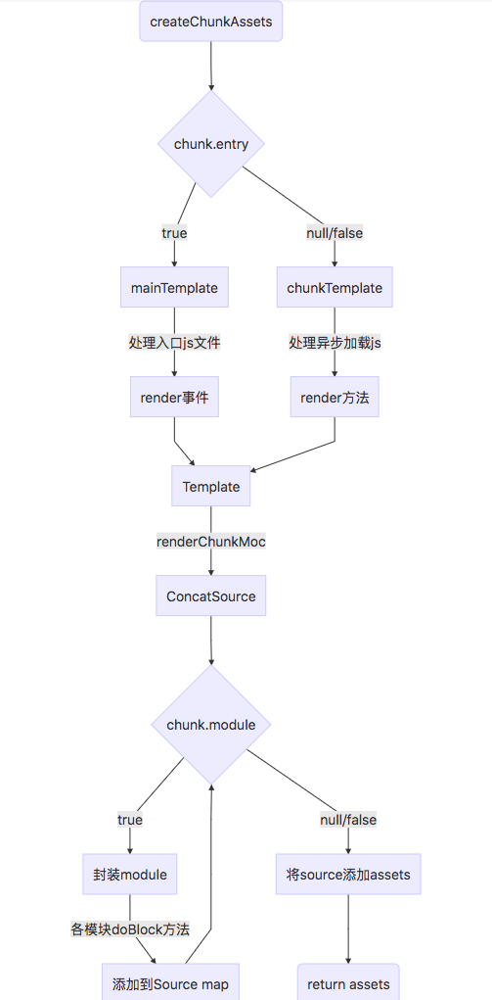

Webpack loader的设计原则
所有模块都是js模块，其他类型的模块比如图片、css等都需要通过对应的loader转成js模块。所以，webpack中所有资源本质上都被当成js模块处理。
所有的loader都是一个管道，入口是一个字符串，出口是另一个字符串，多个loader像水管一样串联起来。
webpack的工作流程

在webpack的源码里面，有两个webpack.js文件，一个在lib目录下，一个在bin目录下，bin目录下的是处理命令行相关的参数的，也就是我们通过命令行直接启动的入口，lib目录下的是webpack的逻辑入口。
每次在命令行输入webpack后，操作系统都会去调用 ./node_modules/.bin/webpack 这个shell脚本。这个脚本会去调用 ./node_modules/webpack/bin/webpack.js 并追加输入的参数，如-p,-w。
在webpack.js这个文件中webpack通过optimist将用户配置的webpack.config.js和shell脚本传过来的参数整合成options对象传到了下一个流程的控制对象中。
optimist
optimist实现了node命令行的解析，API调用也非常方便
1 | var optimist = require("optimist"); |
获取到后缀参数之后，optimist分析参数并以键值对的形式把参数对象保存在optimist.argv中，argv中是这些东东：
1 | // webpack --hot -w |
config合并与插件加载
加载插件之前，webpack会将webpack.config.js中的各个配置项拷贝到options对象中，并加载用户配置在webpack.config.js的plugins。接着optimist.argv会被传入到./node_modules/webpack/bin/convert-argv.js中，通过判断argv中参数的值决定是否去加载对应插件
1 | ifBooleanArg("hot", function() { |
options作为最后的返回值，包含了之后构建阶段所需要的重要信息
1 | { |
可以看到这或许和你自己的webpack.config.js有些相似，只是多传入了一些经shell传入的插件对象。插件对象初始化完毕之后，options也就传入到了下个流程。
1 | var webpack = require('../lib/webpack.js'); |
编译与构建流程
在加载配置文件和 shell 后缀参数申明的插件，并传入构建信息 options 对象后，开始整个 webpack 打包最漫长的一步。而这个时候，真正的 webpack 对象才刚被初始化。
compiler.run() 是webpack的实际入口，会启动自动编译，然后在不同的生命周期调用对应的插件（的回调函数），可以在 lib/webpack.js 中看到主要有以下的生命周期：
- beforeRun
- run
- emit // 把各个chunk输出到结果文件
- afterEmit // 完成输出
- beforeCompile
- compile // 开始进入编译环境
- make // 这里执行代码编译
- afterCompile // 这里根据编译结果合并出我们最终生成的文件名和文件内容
- watchRun // 这里控制台监听编译过程
1. 核心对象 Compilation
compiler.run后首先会触发compile，这一步会构建出Compilation对象，它是一个编译对象。
一般都会有两个Compilation对象，一个负责组织打包过程，包含了每个构建环节以及输出环节所对应的方法，比如一些关键步骤：addEntry()，_addModuleChain()，buildMoudle()，seal()，createChunkAssets()（在每一个节点都会触发webpack事件去调用各插件）；另外一个包含了所有的module，chunk，生成的asset以及用来生成最后打包文件的template的信息。
2. 编译与构建主流程
在创建 module 之前，Compiler 会触发 make，并调用 Compilation.addEntry 方法，通过 options 对象的 entry 字段找到我们的入口js文件。之后，addEntry 会调用 _addModuleChain 方法，最终经过几次调用后会进入到 NormalModule.js 中的 build 方法。而build又会先调用doBuild方法，对每一个require()用对应的loader进行加工，最后生成一个js module。
1 | doBuild(options, compilation, resolver, fs, callback) { |
可以看到，doBuild方法就是调用了相应的loader，把我们的模块转成标准的js模块，无论这个模块是js、css还是图片。也就是说，在webpack.config.js中配置的loader就是在这里调用的。不止是entry文件在这里调loader，它依赖的任何一个模块都会在这里调用，比如css模块，就会在这里调用对应的css-loader和style-loader把它转换成js对象。
3. 构建细节
经过doBuild之后，我们的任何模块都转成了标准的js模块，下面就可以编译js了
1 | build(options, compilation, resolver, fs, callback) { |
那么再来看看parse.parse的代码：
1 | parse(source, initialState) { |
解析完成之后接着会收集依赖，最终这些依赖都会被放到module.dependencies中。
打包输出
在所有模块以及依赖模块build完成，收集完素有的依赖之后，最终又会回到compiler.js中的compile方法里，它会调用compilation.seal方法，seal方法会把所有依赖的模块都通过调用各插件对构建后的结果进行封装，要逐次对每个module和chunk进行整理，生成编译后的源码，合并、拆分、生成hash。
封装过程中，webpack会调用Compilation中的createChunkAssets方法进行打包后代码的生成，流程如下：

从上图可以看到是通过判断是入口js还是需要异步加载js来选择不同的模板对象进行封装，入口js会采用webpack事件流的render事件来触发Template类中的renderChunkModules()（异步记载的js会调用chunkTemplate中的render方法）
1 | if(chunk.entry) { |
模块在封装的时候和它在构建时一样，都是调用各模块类中的方法。封装通过调用module.source()来进行各种操作，比如reuqire()的替换。
1 | MainTemplate.prototype.requireFn = "__webpack_require__"; |
各模块进行 doBlock 后，把 module 的最终代码循环添加到 source 中。一个 source 对应着一个 asset 对象，该对象保存了单个文件的文件名( name )和最终代码( value )。
最后一步，webpack调用Compiler中的emitAssets()，按照output中的配置项将文件输出到了对应的path中，从而webpack整个打包过程结束。如果想对结果处理，需要对emit触发后对自定义插件进行扩展。
流程总结
- 根据webpack.config.js的配置文件注册对应的插件
- 调用comiple.run进入编译阶段
- 在编译的第一阶段是Compilation，它会注册好不同类型的module对应的factory
- 进入make阶段，从entry开始两步走
- 第一步：调用loaders对模块的原始代码进行编译，转换成标准的js代码
- 第二步：调用acorn对js代码进行语法分析，然后收集其中的依赖关系。每个模块都会记录自己的依赖关系，从而形成一颗关系树
- 最后调用compilation.seal进入render阶段，根据之前收集的依赖，决定生成多少文件，每个文件的内容是什么